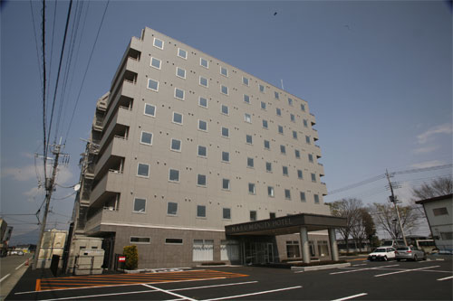
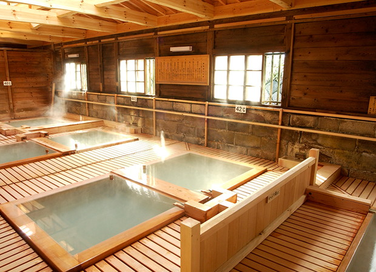

A Base Hotel for Exploring Nasu
那須塩原駅徒歩3分、無料駐車場完備。
観光・出張・温泉巡りや周辺エリアへの移動に便利な、
那須の拠点となるホテルです。

OUR HOTEL
新幹線の改札を抜ければ、そこはもう那須への入り口。
那須塩原駅前という圧倒的な利便性と、車移動を力強く支える広大な無料駐車場を備えています。
那須高原の豊かな自然、歴史ある温泉郷、そしてビジネスの中心地へ。
観光・出張・温泉巡りなど、あなたのあらゆる目的をシームレスに繋ぐ「ベースキャンプ」がここにあります。
CONCEPT
便利なビジネスホテルではなく、
「那須を動くための拠点ホテル」へ。
那須塩原駅徒歩3分は、ただの「駅近」ではありません。 新幹線で東京から70分、降りてすぐに那須を動き出せる機動力です。 無料駐車場は「お得」ではなく、車移動の拠点。 朝食は「無料サービス」ではなく、那須の朝を味わう地域体験。 温泉案内は弱点の補完ではなく、周辺の名湯を巡る滞在の導線設計です。 すべてが、那須という土地を最大限に楽しむための装置として、ひとつにつながっています。
FEATURE
01
新幹線到着後、最短で那須エリアへ。チェックイン前後の身軽な行動を可能にします。
02
車で来ても、ここを起点に。那須高原・板室・塩原温泉郷へ自由に動ける拠点です。
03
那須御養卵の特別な卵かけごはん・地元野菜・焼きたてパン。朝から那須を動き出すための、地域体験です。
04
那須・塩原・板室の名湯まですぐ。日帰り温泉案内付きで、滞在中の動きを設計します。

ROOMS
全室シモンズベッド採用。個別空調、防音ペアガラス、幅2m of ワイドデスク。 観光で歩き疲れた一日も、出張の前夜も、しっかり休めるための機能を客室に集約しました。
全室ユニットバスのため、お風呂はあえて温泉案内と組み合わせ、
客室を「休む場所」、温泉を「楽しむ場所」として明確に分けています。
BREAKFAST
那須御養卵の特別な卵かけごはん、地元野菜のサラダ、焼きたてのパン、 栃木県産のお米と味噌汁。地域の食材を中心にした朝食バイキングを無料でご用意しています。
早朝から那須を動き出す方のために、朝6:30よりオープン。
観光初日の朝を、ここから始めてください。

ONSEN GUIDE
那須温泉郷、板室温泉、塩原温泉郷。 車で15分〜40分 of 圏内に、性質の異なる名湯が点在しています。 当ホテルでは、それぞれの温泉の泉質・所要時間・日帰り入浴料金をまとめた 独自の温泉ガイドをご用意しています。
フロントでのご相談、館内QRからのデジタル案内にも対応。
「次はどこへ？」をスムーズに設計します。
ACCESS
BY SHINKANSEN
徒歩3分
JR那須塩原駅西口より
東京駅から新幹線で約70分
BY CAR
10分
東北自動車道
黒磯板室ICより約10分
PARKING
無料
無料駐車場完備
那須エリア観光の拠点に
NEWS
那須塩原駅徒歩3分の拠点ホテルから、
あなただけの那須の楽しみ方が始まります。